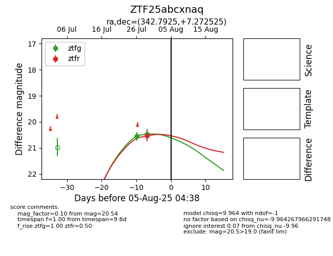

Target ZTF25abcxnaq at 2025-08-05 04:38, see:
FINK: fink-portal.org/ZTF25abcxnaq
Lasair: lasair-ztf.lsst.ac.uk/objects/ZTF25abcxnaq
ALeRCE: alerce.online/object/ZTF25abcxnaq
alt names
ZTF25abcxnaq (ztf,fink)
coordinates:
equatorial (ra, dec) = (342.7925,+7.27253)
galactic (l, b) = (78.3402,-44.93570)
photometry
last ztfg=20.47, ztfr=20.54
2 ztfg, 1 ztfr detections
